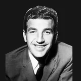

Bill Sharman
Age at death
87
Oct. 25, 2013
NBA seasons
11
1950-51 to 1960-61
Games
711
regular season
All-Star selections
8
Hall of Fame
Life
- Born
- May 25, 1926, in Abilene, Texas
- Died
- Oct. 25, 2013, in Redondo Beach, California
- Age at death
- 87
- Height
- 6'1" (height and lifespan)
- Honors
- Naismith Basketball Hall of Fame; 8 NBA All-Star selections; NBA champion 4 times; All-NBA 7 times
Teams
regular-season games| Washington Capitols | 1950-51 | 1 | 31 |
| Boston Celtics | 1951-52 to 1960-61 | 10 | 680 |
Age in context
- No. 6 longest-lived Washington Capitols player ever (oldest Washington Capitols players ever).
- He lived longer than 76.6% of the NBA players born in the 1920s who have died (98.9% of that generation has died, so the comparison is essentially complete).
Born the same year (1926)
Also died at age 87

22 players died at 87; the most accomplished are shown.
Also born on May 25
Also died on October 25
Similar height
Of 141 NBA players within an inch of his height (6'1") born 1921–1931 whose outcome at 87 is known, 24.8% reached 87. How height and lifespan line up.
Keep exploring
★3 = number of NBA All-Star selections · HOF = Naismith Basketball Hall of Fame